| Sadly, we lost a family member this month Mary
Beth fought hard against cancer for many years. Also, the cold of
winter really hit this month. We managed to escape the -30
temperatures by conveniently being in Hawai'i at that time. But
otherwise, we gutted it out with the rest of the folks in this area.
Add in a round of suffering with Covid-19 for me, and that makes January
mostly something to get through. Thank goodness we took that Hawai'i
trip! |
|
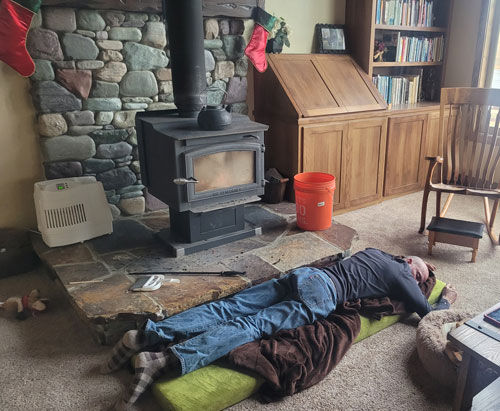 This is how Eric does winter - naps, nights, you name it. He
stokes up the fire, then |
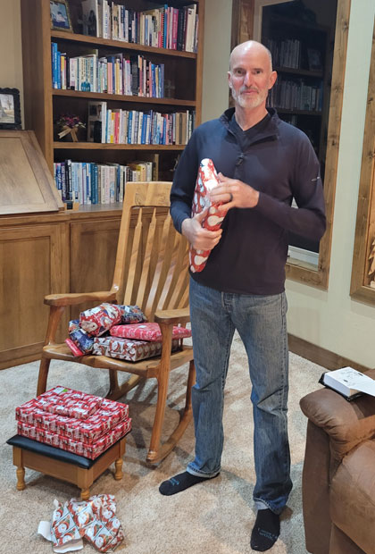 |
| I returned from my visit to Oklahoma with a pile of gifts for Eric
from my family. Here he is tearing into them now! |
|
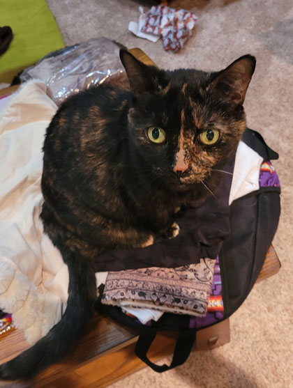 This sweet girl had to be in the middle of everything we did.
Here she |
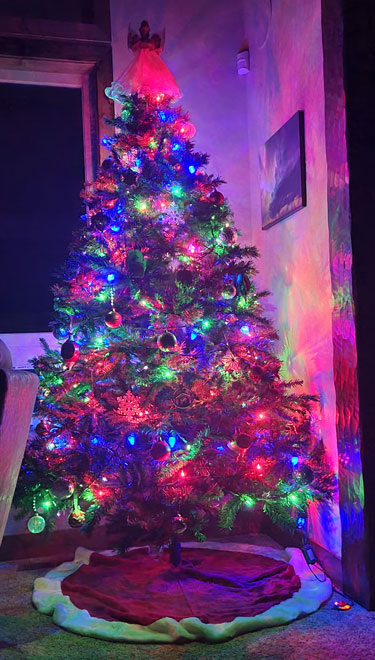 |
| A night-time view of our Christmas tree, looking pretty. | |
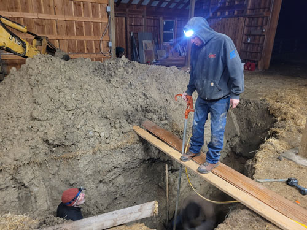 |
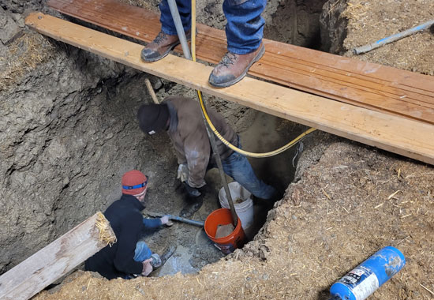 |
| Eric decided to build a rock climbing room in our barn. Step 1 was to
move a hydrant that's inside of our barn. Naturally, it did not go to plan. Burst pipe at the bottom of a wet hole! |
He had to recruit both Mike O. and brother Dan to come over after work that
cold evening while they tried to clear out enough mud and water to fix the busted pipe without the walls caving in. |
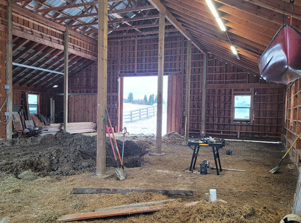 Crisis resolved, hydrant moved, next step is to prepare for concrete. |
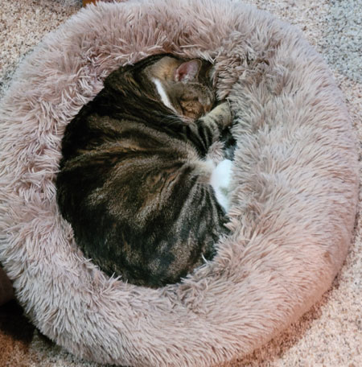 |
| I love taking pictures of the cats enjoying this "marshmallow" cat bed. Here's Lily. | |
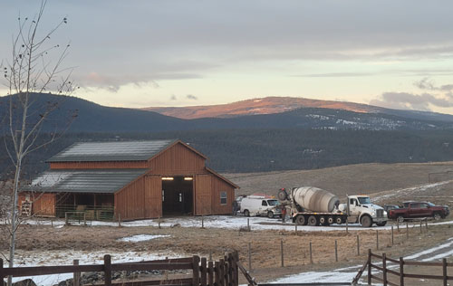 Time for the concrete pour. We had a whole lot of people here one early morning. |
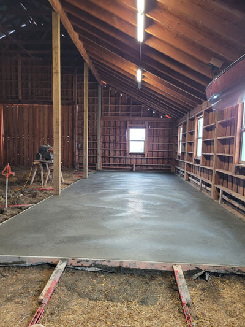 |
| Slab poured! | |
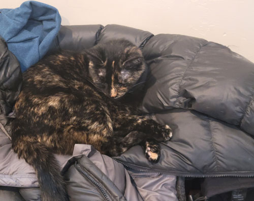 |
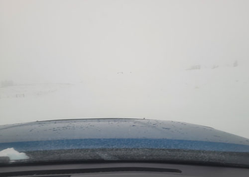 |
| Feisty believes that there's no better cat bed than our guest's coats. | This is a view out the windshield one day when it was foggy and snowing and
the entire world was white. I have no idea how Eric stayed on our driveway, he's amazing. |
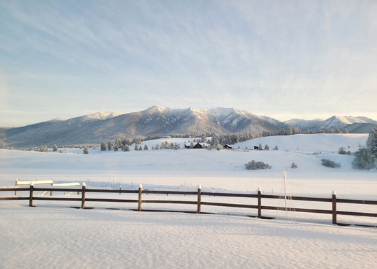 |
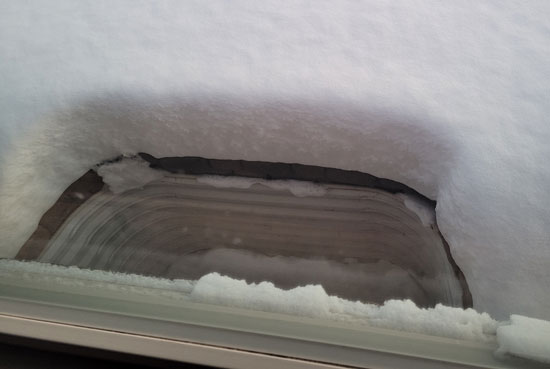 |
| After a particularly deep snow. It's past the bottom rail of the fence in some places. | Taking a picture of the window well to show how deep the snow got. |
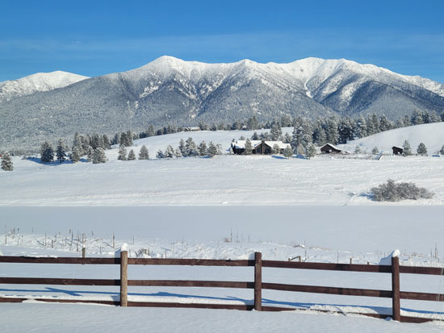 |
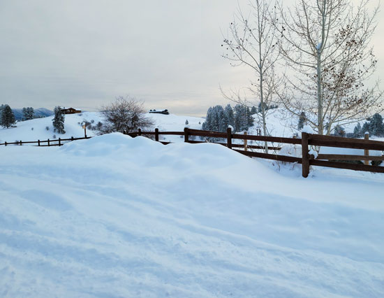 |
| Blue skies sure look nice with fresh snow. But we're happy for blue skies whenever we can get them! | A mountain of snow built up from the many trips Eric has made on our snow plow. |
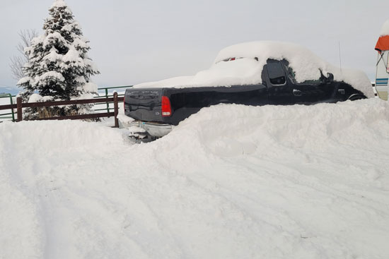 Good thing we don't need to get Blackie out anytime soon! |
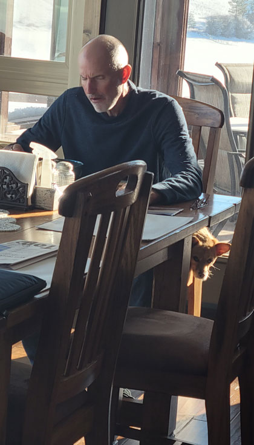 |
| Buddy gets so happy to have Eric home, he becomes a little tan shadow. | |
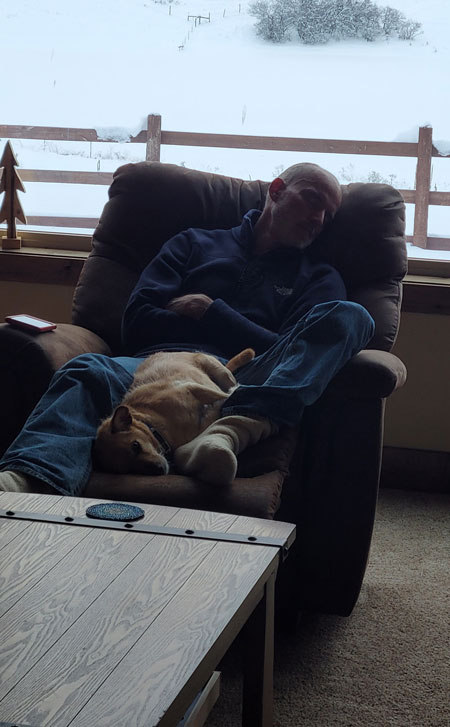 |
January was a sad month for the Casazza family. We lost our
sister-in-law Mary Beth on the 10th. She fought a long battle against cancer, it's hard to imagine that anyone
ever fought harder. |
| They dare to nap about 3 feet away from the fire this time. | |
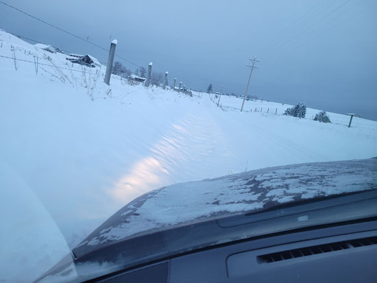 |
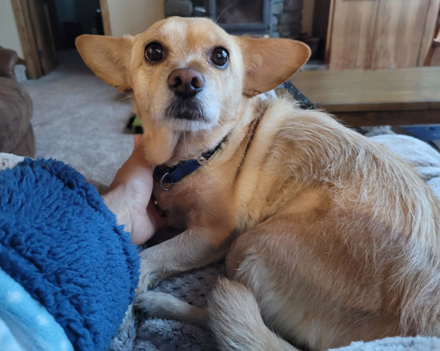 |
| I had been supposed to be in Jamaica, but postponed the trip for the
funeral. All that day I kept feeling more and more sick and tired. I was going to push on and make the trip anyway, but on my way to the airport hotel I ended up in the ditch. I felt SO bad, I finally gave in and cancelled my trip. |
The next day I did a test and learned that I had Covid-19, again. It
seems to be an every-January thing for me. I was very sick for about 3 days. The pets did their best to make me feel better. |
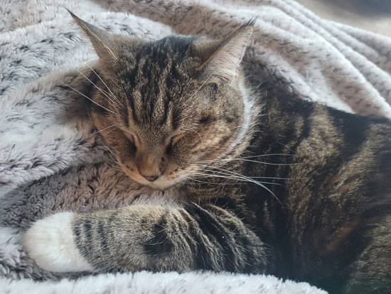 Lily takes a turn at comforting the sick lady. |
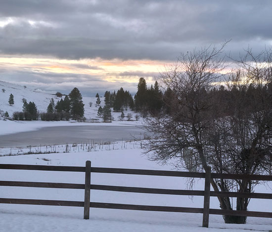 |
| When I finally got better, we also had a nice day to help me celebrate
getting my health back. Any sunrise that includes a glimpse of sky is a welcome thing! |
|
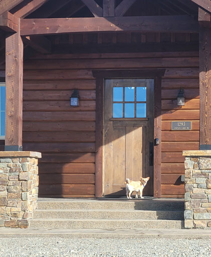 |
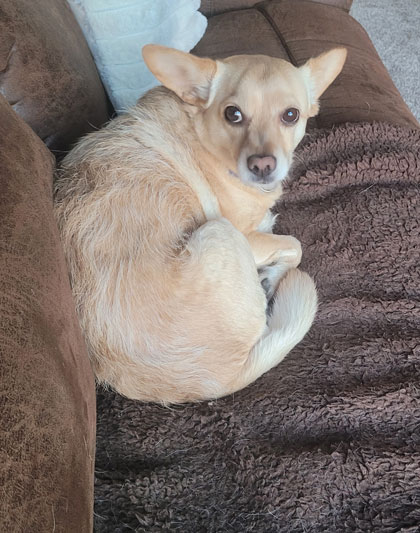 |
| Buddy says, "Why are we out walking in the cold? The fireplace is inside!" | Now he says, "What were you trying to do, freeze me to death?" |